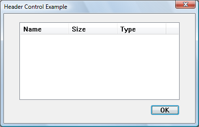

A header control is a window that is usually positioned above columns of text or numbers. It contains a title for each column, and it can be divided into parts. The user can drag the dividers that separate the parts to set the width of each column. The following illustration shows a header control that has labeled columns that give detailed information about files in a directory.

You can create a header control by using the CreateWindowEx function, specifying the WC_HEADER window class and the appropriate Header Control Styles. This window class is registered when the common control DLL is loaded. To ensure that this DLL is loaded, use the InitCommonControlsEx function. After you create a header control, you can divide it into parts, set the text in each part, and control the appearance of the window by using header window messages.
A header control can be created as a child window of another control, such as a list box. However, the parent control is not aware of the header control and does not allow for the space taken up by the header, with the result that list items will appear behind the header. If you wish to use a header control in a list box or other control, the parent control must be owner-drawn so that all items are displayed in the correct position.
List-view controls already have header controls. Instead of creating a header control for a list-view control, you use LVM_GETHEADER or ListView_GetHeader to retrieve the existing control.
Typically, you must set the size and position of a header control to fit within the boundaries of a particular rectangle, such as the client area of a window. By using the HDM_LAYOUT message, you can retrieve the appropriate size and position values from the header control.
When sending HDM_LAYOUT, you specify the address of an HDLAYOUT structure that contains the coordinates of the rectangle that the header control is to occupy and provides a pointer to a WINDOWPOS structure. The control fills the WINDOWPOS structure with size and position values appropriate for positioning the control along the top of the specified rectangle. The height value is the sum of the heights of the control's horizontal borders and the average height of characters in the font currently selected into the control's device context.
If you want to use HDM_LAYOUT to set the initial size and position of a header control, set the initial visibility state of the control so that it is hidden. After sending HDM_LAYOUT to retrieve the size and position values, you can use the SetWindowPos function to set the new size, position, and visibility state.
A header control typically has several header items that define the columns of the control. You add an item to a header control by sending the HDM_INSERTITEM message to the control. The message includes the address of an HDITEM structure. This structure defines the properties of the header item, which can include a string, a bitmapped image, an initial size, and an application-defined LPARAM value.
The fmt member of an item's HDITEM structure can include either the HDF_STRING or HDF_BITMAP flag to indicate whether the control displays the item's string or bitmap. If you want to display both a string and a bitmap, create an owner-drawn item by setting the fmt member to include the HDF_OWNERDRAW flag. The HDITEM structure also specifies formatting flags that tell the control whether to center, left-align, or right-align the string or bitmap in the item's rectangle.
HDM_INSERTITEM returns the index of the newly added item. You can use the index in other messages to set properties or retrieve information about the item. You can delete an item by using the HDM_DELETEITEM message, specifying the index of the item to delete.
You can use the HDM_SETITEM message to set the properties of an existing header item and the HDM_GETITEM message to retrieve the current properties of an item. To retrieve a count of the items in a header control, use the HDM_GETITEMCOUNT message.
You can define individual items of a header control to be owner-drawn items. Using this technique gives you more control than you would otherwise have over the appearance of a header item.
You can use the HDM_INSERTITEM message to insert a new owner-drawn item into a header control or the HDM_SETITEM message to change an existing item to an owner-drawn item. Both messages include the address of an HDITEM structure, which should have the fmt member set to the HDF_OWNERDRAW value.
When a header control must draw an owner-drawn item, it sends the WM_DRAWITEM message to the parent window. The wParam parameter of the message is the child window identifier of the header control, and the lParam parameter is an address of a DRAWITEMSTRUCT structure. The parent window uses the information in the structure to draw the item. For an owner-drawn item in a header control, the DRAWITEMSTRUCT structure contains the following information.
| Member | Description |
|---|---|
| CtlType | ODT_HEADER owner-drawn control type. |
| CtlID | Child-window identifier of the header control. |
| itemID | Index of the item to be drawn. |
| itemAction | ODA_DRAWENTIRE drawing-action flag. |
| itemState | ODS_SELECTED drawing-action flag if the cursor is on the item and the mouse button is down. Otherwise, this member is zero. |
| hwndItem | Handle to the header control. |
| hDC | Handle to the device context of the header control. |
| rcItem | Coordinates of the header item to be drawn. The coordinates are relative to the upper-left corner of the header control. |
| itemData | Application-defined 32-bit value associated with the item. |
Â
By specifying the HDS_FILTERBAR window style for a header control, you can enable the placement of filter edit boxes underneath the column headings. A filter button appears beside the edit box. You can implement filtering by responding to HDN_BEGINFILTEREDIT, HDN_ENDFILTEREDIT, HDN_FILTERBTNCLICK, or HDN_FILTERCHANGE notification codes.
By default, the edit box contains a prompt for the user to enter text. You can restore the edit box to this default state by using Header_ClearFilter or Header_ClearAllFilters.
The following code example shows how to retrieve the header control from a list-view control and add a filter bar.
// hList is the HWND of the list-view control.
HWND hHeader = ListView_GetHeader(hList);
LONG_PTR styles = GetWindowLongPtr(hHeader, GWL_STYLE);
SetWindowLongPtr(g_hHeader, GWL_STYLE, styles | HDS_FILTERBAR);
This section describes the window messages handled by the window procedure for the WC_HEADER window class.
| Message | Processing performed |
|---|---|
| WM_CREATE | Initializes the header control. |
| WM_DESTROY | Uninitializes the header control. |
| WM_ERASEBKGND | Fills the background of the header control using the control's current background color. |
| WM_GETDLGCODE | Returns a combination of the DLGC_WANTTAB and DLGC_WANTARROWS values. |
| WM_GETFONT | Returns the handle to the current font, which is used by the header control to draw its text. |
| WM_LBUTTONDBLCLK | Captures mouse input. If the mouse cursor is on a divider, the control sends the HDN_BEGINTRACK notification code and begins dragging the divider. If the cursor is on an item, the item is displayed in the pressed state. |
| WM_LBUTTONDOWN | Same as the WM_LBUTTONDBLCLK message. |
| WM_LBUTTONUP | Releases the mouse capture. If the control was tracking mouse movement, it sends the HDN_ENDTRACK notification code and redraws the header control. Otherwise, the control sends the HDN_ITEMCLICK notification code and redraws the header item that was clicked. |
| WM_MOUSEMOVE | If a divider is being dragged, the control sends the HDN_TRACK notification code and displays the item at the new position. If the left mouse button is down and the cursor is on an item, the item is displayed in the pressed state. |
| WM_NCCREATE | Allocates and initializes an internal data structure. |
| WM_NCDESTROY | Frees the resources allocated by the header control after the header control is uninitialized. |
| WM_PAINT | Paints the invalid region of the header control. If the wParam parameter is non-NULL, the control assumes that the value is an HDC and paints using that device context. |
| WM_SETCURSOR | Sets the cursor shape, depending on whether the cursor is on a divider or in a header item. |
| WM_SETFONT | Selects a new font handle into the device context for the header control. |
Â
Â
Â